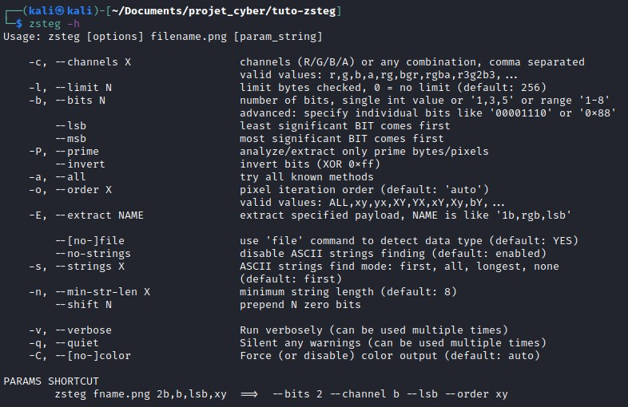
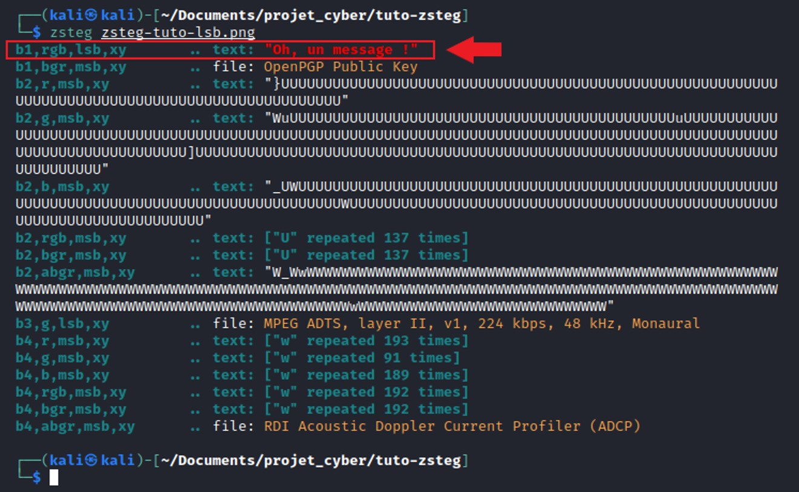

Zsteg est un outil Ruby qui détecte les données cachées dans les images PNG et BMP. Cet outil est donc très utile pour détecter les données cachées par la stéganographie en PNG et BMP, surtout pour la stéganographie LSB.
Zsteg est capable de détecter :
Pour installer Zsteg sur Kali Linux, il suffit de taper la commande suivante : sudo gem install zsteg
Pour comprendre comment Zsteg fonctionne et ce que l'outil nous permet de réaliser, vous pouvez taper la commande ci-dessous : zsteg -h On peut alors observer toutes les options à notre disposition :
Certaines options sont très intuitives et très faciles à utiliser, alors que d'autres nécessitent de préciser des valeurs dont nous ne connaissons pas forcément la signification. En effet, Zsteg comprend les paramètres suivants :
Pour vous montrer comment Zsteg fonctionne, nous allons vous montrer un exemple ci-dessous. Voici une image où un message a été dissimulé dans les LSB. La modification de cette image ne peut être vue à l'œil nu :

Si vous voulez aussi réaliser le tutoriel de votre côté, téléchargez l'image en cliquant ici. Ensuite, il vous suffit de taper la commande suivante : zsteg zsteg-tuto-lsb.png Vous obtiendrez alors le résultat suivant :
On peut alors remarquer qu'un message a été retrouvé au niveau des LSB pour les canaux rgb avec pour ordre d'itération des pixels xy.
Le tutoriel est maintenant terminé, et vous devriez être capable de pouvoir utiliser les options que Zsteg met à disposition. Pour valider ce tutoriel, il vous suffira de rentrer "Tuto-Zsteg" dans la case de validation.